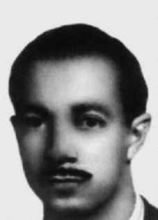

Paulo
Mendes
Rodrigues
CIRCUNSTÂNCIAS DA MORTE
Sua morte foi descrita pelo Relatório Arroyo como tendo ocorrido em 25 de dezembro de 1973, no episódio posteriormente conhecido como o “Chafurdo de Natal”. Nesta ocasião, as Forças Armadas chegaram ao acampamento da comissão militar da guerrilha, onde encontravam-se muitos guerrilheiros, dentre os quais Paulo, Maurício Grabois, Guilherme Gomes Lund e Líbero Giancarlo Castiglia, que tiveram suas mortes confirmadas na ocasião.
A data também é apontada no relatório do Centro de Informações do Exército (CIE), Ministério do Exército, de 1975, que elenca Paulo em uma listagem de “subversivos” participantes da guerrilha do Araguaia. O documento utiliza, entretanto, o nome “Paulo Mauro Rodrigues” para se referir ao guerrilheiro com o codinome de Paulo na região.
No relatório entregue pelo Exército ao ministro da Justiça, em 1993, o nome de Paulo consta como participante da guerrilha, sem que haja informação sobre seu paradeiro. Segundo depoimento de Sebastião Rodrigues de Moura, o Curió, a equipe de militares que chegou ao acampamento militar da guerrilha foi chefiada pelo major Nilton Cerqueira.
His death was described by the Arroyo Report as having occurred on December 25, 1973, in the episode later known as the “Christmas Wallowing.” On this occasion, the Armed Forces arrived at the camp of the guerrilla military commission, where there were many guerrillas, including Paulo, Maurício Grabois, Guilherme Gomes Lund and Líbero Giancarlo Castiglia, whose deaths were confirmed at the time.
The date is also mentioned in the report from the Army Information Center (CIE), Ministry of the Army, from 1975, which lists Paulo in a list of “subversives” participating in the Araguaia guerrilla. The document uses, however, the name “Paulo Mauro Rodrigues” to refer to the guerrilla with the code name Paulo in the region.
In the report delivered by the Army to the Minister of Justice in 1993, Paulo's name appears as a participant in the guerrilla, without any information about his whereabouts. According to testimony from Sebastião Rodrigues de Moura, known as Curió, the team of soldiers that arrived at the guerrilla military camp was led by Major Nilton Cerqueira.
Su muerte fue descrita por el Informe Arroyo como ocurrida el 25 de diciembre de 1973, en el episodio conocido más tarde como el “Revolcarse de Navidad”. En esta ocasión, las Fuerzas Armadas llegaron al campamento de la comisión militar guerrillera, donde se encontraban numerosos guerrilleros, entre ellos Paulo, Maurício Grabois, Guilherme Gomes Lund y Líbero Giancarlo Castiglia, cuyas muertes fueron confirmadas en ese momento.
La fecha también se menciona en el informe del Centro de Información del Ejército (CIE), Ministerio del Ejército, de 1975, que incluye a Paulo en una lista de “subversivos” que participan en la guerrilla de Araguaia. El documento utiliza, sin embargo, el nombre “Paulo Mauro Rodrigues” para referirse al guerrillero con el nombre clave de Paulo en la región.
En el informe entregado por el Ejército al Ministro de Justicia en 1993, el nombre de Paulo aparece como participante de la guerrilla, sin ninguna información sobre su paradero. Según testimonio de Sebastião Rodrigues de Moura, conocido como Curió, el equipo de militares que llegó al campamento militar guerrillero estaba encabezado por el mayor Nilton Cerqueira.